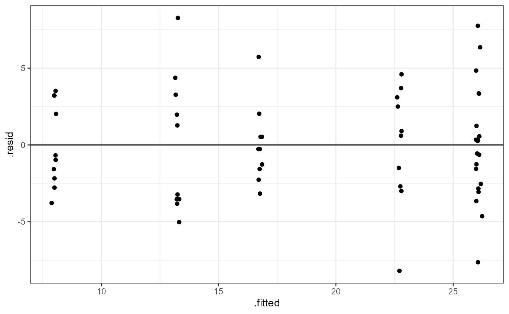

Lab 12: 2-Way ANOVA
ENVS475: Experimental Analysis and Design
Spring, 2023
Source:vignettes/articles/lab_12_2-way-anova.Rmd
lab_12_2-way-anova.RmdAbout
This lab will demonstrate how to perform a two-way ANOVA with interaction in R. This includes checking assumptions, fitting the linear model, interpreting and visualizing the results.
Preliminaries
Packages
For this lab, we will be using the dplyr and
ggplot2 packages. Make sure both packages are installed on
your computer, and then run the following code:
Data
We will use the ToothGrowth data which comes with R.
Load the data by running the following command:
data("ToothGrowth")ToothGrowth contains data examining the effect of
varying the dose (dose) of two supplements
(supp) on the length (len) of teeth in Guinea
Pigs. Run ?ToothGrowth to learn more about the data.
Analysis
Let’s look at the full data, and see what the treatment levels are.
names(ToothGrowth)## [1] "len" "supp" "dose"
dim(ToothGrowth)## [1] 60 3
head(ToothGrowth)## len supp dose
## 1 4.2 VC 0.5
## 2 11.5 VC 0.5
## 3 7.3 VC 0.5
## 4 5.8 VC 0.5
## 5 6.4 VC 0.5
## 6 10.0 VC 0.5
distinct(ToothGrowth, supp)## supp
## 1 VC
## 2 OJ
distinct(ToothGrowth, dose)## dose
## 1 0.5
## 2 1.0
## 3 2.0
distinct(ToothGrowth, supp, dose)## supp dose
## 1 VC 0.5
## 2 VC 1.0
## 3 VC 2.0
## 4 OJ 0.5
## 5 OJ 1.0
## 6 OJ 2.0For this analysis, we have two factors (supp and dose). The supp factor has two levels: VC, and OJ and the dose factor has three levels: 0.5, 1.0, and 2.0.
Wrangle variables to be a Factor
You may have noticed that the dose variable is a class
dbl. If we plug this into the lm() function, R
will treat this as continuous and will give us a different result. In
ANOVA, we want to analyze the data based on categories. We can chnage
the dose variable to an ordered factor with the following
code. We will also be changing the name of the data object to
dat to have less typing to do.
dat <- ToothGrowth %>%
mutate(dose = factor(dose,
levels = c(0.5, 1, 2),
labels = c("D0.5", "D1", "D2")))We can also use the tab() function to see how many
observations are in each group:
table(ToothGrowth$supp, ToothGrowth$dose)##
## 0.5 1 2
## OJ 10 10 10
## VC 10 10 10We can see that there are 10 observations in each combination of all levels for both factors. We call this a completely balanced ANOVA design.
Plot data
Let’s start by plotting all of the data. We will save time and consider all the grouping variables.
ggplot(dat,
aes(x = dose,
y = len,
color = supp)) +
geom_boxplot() +
theme_bw()
Interaction plots
We can estimate the effects based on the boxplot above, but an interaction plot is usually more illustrative.
Base R Plotting
with(data = dat,
interaction.plot(dose, supp, len))
ggplot
ggplot(dat,
aes(x = dose,
y = len,
color = supp,
group = supp)) +
geom_point() +
stat_summary(fun = mean,
geom = "line") +
theme_bw()Check pre-analysis assumptions
Assumption: equal variance
These data look to have approximately equal variation across the
treatment groups. The D1:VC and D2:OJ look to
have slightly less variation, but this is probably close enough.
Assumptions: Normality of residuals
QQ-plot
ggplot(dat,
aes(sample = len)) +
stat_qq()+
stat_qq_line()Most of the observations (points) fall close to the reference line. There’s a few that are off near the low and high end of the data, but this should be ok.
Two-way ANOVA
Hypotheses
Main effect of supplement (supp)
\[ H0: \text{There is NO effect of supplement on tooth growth} \]
\[HA: \text{There IS AN EFFECT of supplement on tooth growth}\]
Two-way ANOVA with lm()
Let’s first fit a linear model to the data.
tooth_lm <- lm(len ~ supp * dose, data = dat)
tooth_lm##
## Call:
## lm(formula = len ~ supp * dose, data = dat)
##
## Coefficients:
## (Intercept) suppVC doseD1 doseD2 suppVC:doseD1
## 13.23 -5.25 9.47 12.83 -0.68
## suppVC:doseD2
## 5.33Assumption: Equal variance of residuals
Before we look at the results, let’s check our post-model fit assumption with a fitted vs. residuals plot.
ggplot(tooth_lm,
aes(x = .fitted, y = .resid)) +
geom_point(
position = position_jitter(
width = 0.1,
height = 0)) +
geom_hline(yintercept = 0) +
theme_bw()
In this plot, the absolute magnitude of the maximum and minimum y-values are approximately the same (~ -7.5, ~ 7.5), although there are a couple of points above the 1.25 region. There may be slightly more variation on the right side (points are further from the line). However, there is no clear pattern in the spread of the points, so this looks OK.
ANOVA table
In order to get the statistical values for the ANOVA table, we need
to use the anova() function on the model fit object.
anova(tooth_lm)## Analysis of Variance Table
##
## Response: len
## Df Sum Sq Mean Sq F value Pr(>F)
## supp 1 205.35 205.35 15.572 0.0002312 ***
## dose 2 2426.43 1213.22 92.000 < 2.2e-16 ***
## supp:dose 2 108.32 54.16 4.107 0.0218603 *
## Residuals 54 712.11 13.19
## ---
## Signif. codes: 0 '***' 0.001 '**' 0.01 '*' 0.05 '.' 0.1 ' ' 1You can see that we know have a row for each of the main factors and
a row for the interaction effect (supp:dose) as well as a
fourth row for the residuals (unexplained variation).
We interpret the F-value and p-value for each factor as before. Our
interpretation of the main effects is the same as before. For example,
there is a significant main effect of supplement (supp) and
dose (dose).
We can now also make a statement of the statistical significance for
the interactive effect. In this case, the p-value for the
supp:dose interaction is p = 0.02 and this is less than our
\(\alpha = 0.05\) cutoff, so there
is an interactive effect. In other words, the effect of
supplement depends on the dose applied (or the effect of the dose
depends on the supplement type). Reminder do not try
and interpret what the interaction effect is, just say that there is
one.
ANOVA Interpretation
Remember that the hypotheses for ANOVA are either that all means are the same, or that at least one was different. ANOVA can only tell us that there is a difference. Therefore, our interpretation would look something like this:
Based on a 2-way ANOVA with interaction, there were significant main effects of supplement (\(F_{1, 54}= 15.572, p < 0.001\)) and dose (\(F_{2, 54}= 92, p < 0.001\)). Furthermore, there was a significnat interaction (\(F_{2, 54}= 4.1, p = 0.02\)) which means that the effect of one factor depended on the level of the other factor.
Relate ANOVA table to intercation plot
Main effect of supp
“Average” the y-values for each line individually across the x-values. Overall, the average of the red line is not equal to the average of the blue line: Significant main effect.
Multiple Comparisons
In order to see which means are different, we can view the
summary output from the lm() model, as well as calculate
Tukey’s HSD.
lm() summary
summary(tooth_lm)##
## Call:
## lm(formula = len ~ supp * dose, data = dat)
##
## Residuals:
## Min 1Q Median 3Q Max
## -8.20 -2.72 -0.27 2.65 8.27
##
## Coefficients:
## Estimate Std. Error t value Pr(>|t|)
## (Intercept) 13.230 1.148 11.521 3.60e-16 ***
## suppVC -5.250 1.624 -3.233 0.00209 **
## doseD1 9.470 1.624 5.831 3.18e-07 ***
## doseD2 12.830 1.624 7.900 1.43e-10 ***
## suppVC:doseD1 -0.680 2.297 -0.296 0.76831
## suppVC:doseD2 5.330 2.297 2.321 0.02411 *
## ---
## Signif. codes: 0 '***' 0.001 '**' 0.01 '*' 0.05 '.' 0.1 ' ' 1
##
## Residual standard error: 3.631 on 54 degrees of freedom
## Multiple R-squared: 0.7937, Adjusted R-squared: 0.7746
## F-statistic: 41.56 on 5 and 54 DF, p-value: < 2.2e-16The summary output with multiple-levels of a factor and an interaction becomes much more complicated. However, if we take them one at-a-time we can see there’s not much different.
The intercept is the mean estimate for our reference group, which in this case is the OJ supplement at D0.5. We will need to keep this in mind when we look at all of the other coefficient estimates.
Other Coefficients:
suppVC=OJ:D0.5-VC:D0.5doseD1=OJ:D0.5-OJ:D1doseD2=OJ:D0.5-OJ:D2suppVC:doseD1=OJ:D0.5-VC:D1suppVC:doseD2=OJ:D0.5-VC:D2
Interpretation of p-values
- Intercept: Is mean length of
OJ:D0.5= 0?- Low p-value, Reject null. Value is different from 0
- Low p-value, Reject null. Value is different from 0
- Is the difference of the treatment group different from our
reference group?
- reference group in this case is:
OJ:D0.5
-
suppVC:doseD1has a high p-value, failt to reject (FTR) the null. In other words, it is not different from ’OJ:D0.5` (refer back to box plot)
- All other coefficients have p < 0.05, so reject the null hypothesis that those differences = 0. (In other words, there IS a difference between means.)
- reference group in this case is:
Tukey’s HSD
Before we run the Tukey HSD test, we need to run an ANOVA on our
linear model fit using the aov() function.
# ANOVA of our lm model
tooth_aov <- aov(tooth_lm)
# Tukey's test on the plant_aov object
tooth_tukey <- TukeyHSD(tooth_aov)
# print out results
tooth_tukey## Tukey multiple comparisons of means
## 95% family-wise confidence level
##
## Fit: aov(formula = tooth_lm)
##
## $supp
## diff lwr upr p adj
## VC-OJ -3.7 -5.579828 -1.820172 0.0002312
##
## $dose
## diff lwr upr p adj
## D1-D0.5 9.130 6.362488 11.897512 0.0e+00
## D2-D0.5 15.495 12.727488 18.262512 0.0e+00
## D2-D1 6.365 3.597488 9.132512 2.7e-06
##
## $`supp:dose`
## diff lwr upr p adj
## VC:D0.5-OJ:D0.5 -5.25 -10.048124 -0.4518762 0.0242521
## OJ:D1-OJ:D0.5 9.47 4.671876 14.2681238 0.0000046
## VC:D1-OJ:D0.5 3.54 -1.258124 8.3381238 0.2640208
## OJ:D2-OJ:D0.5 12.83 8.031876 17.6281238 0.0000000
## VC:D2-OJ:D0.5 12.91 8.111876 17.7081238 0.0000000
## OJ:D1-VC:D0.5 14.72 9.921876 19.5181238 0.0000000
## VC:D1-VC:D0.5 8.79 3.991876 13.5881238 0.0000210
## OJ:D2-VC:D0.5 18.08 13.281876 22.8781238 0.0000000
## VC:D2-VC:D0.5 18.16 13.361876 22.9581238 0.0000000
## VC:D1-OJ:D1 -5.93 -10.728124 -1.1318762 0.0073930
## OJ:D2-OJ:D1 3.36 -1.438124 8.1581238 0.3187361
## VC:D2-OJ:D1 3.44 -1.358124 8.2381238 0.2936430
## OJ:D2-VC:D1 9.29 4.491876 14.0881238 0.0000069
## VC:D2-VC:D1 9.37 4.571876 14.1681238 0.0000058
## VC:D2-OJ:D2 0.08 -4.718124 4.8781238 1.0000000Here, we can see that we have a section for each factor as well as a section for the interaction. Witin each section there is a row for every pairwise combination. The table gives us an estimated and 95% CI for the differences, as well as an adjusted p value.
We can also plot these differences. Any coefficient estimates which cross zero are not considered to be significantly different.
plot(tooth_tukey)